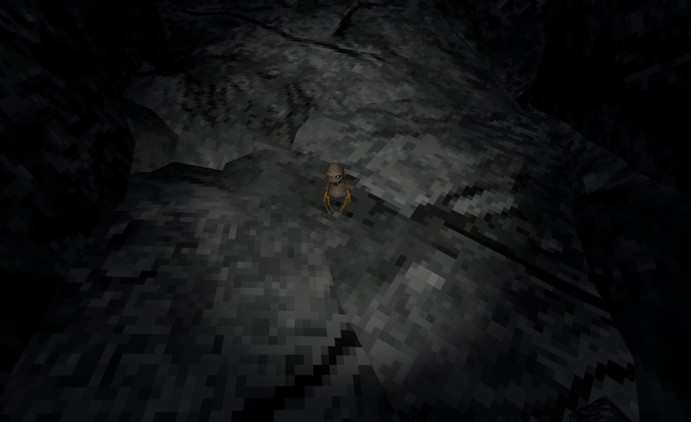
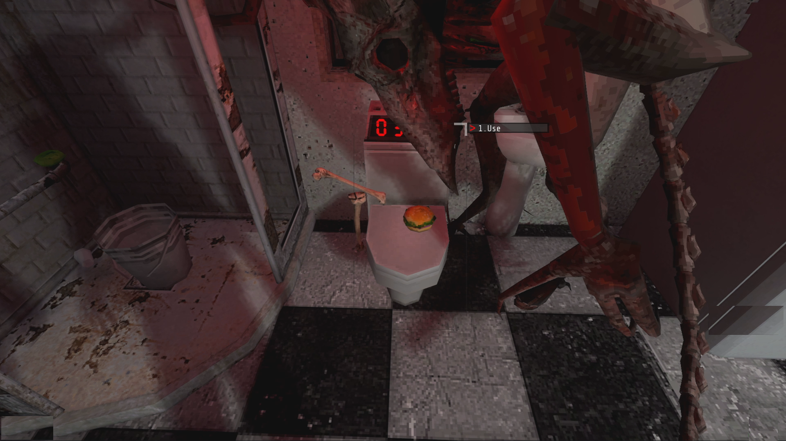
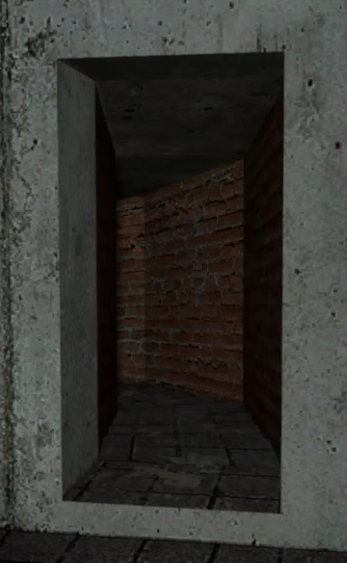
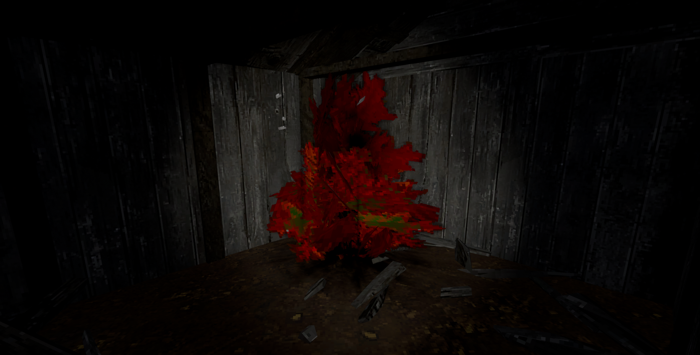
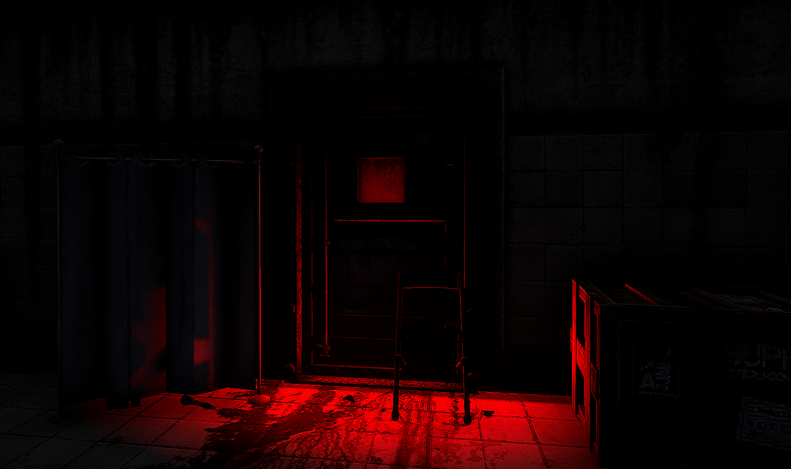

3:33 AM Events
Description:
There are very few events in VOTV that can be triggered by the simple timing of 3:33 am or witch hour. These events can occur on any day and on any condition as long as the clock shows 3:33.
| Event | Description | Tips | Image |
|---|---|---|---|
| AB Plush Event | In the AB Cave you can access a special plush that is a depiction or representation of the AAB Entity. | You will want to have triggered the Wolfgang Awakening Event, from there inside the cave, just wait for the plush to spawn on the furthest nest. |

|
| Furfur Toilet Event | Spawns the Furfur near the toilet. | Just use the toilet exactly at 3:33 am. |

|
| Brickwall Event (Removed) | The Brickwall Object will open up revealing an infinite spiral staircase. | Wait at the bathroom floor, this next part will require a lot of precision, as soon as it hits 3:32 wait half a second and jump straight down the hole. After ragdolling and turning around the Brickwall should be opened. |

|
| Ritual Warp Event | The Red Ariral Tree will have a black warp spawn inside of it, step in to teleport into the Ritual Altar. | Wait inside the Wooded Shack Landmark at around 3:20 am and just stand there. From there just wait for the warp to spawn and you should be able to enter it. This one is actually triggered at 3:30 am as opposed to 3:33am like all the others here. |

|
| Furfur Meat Locker Event | The meat locker in the Main Base basement will be glowing red as a Furfur spawns for a quick moment. | Come down to the basement at exactly 3:30 am. |

|